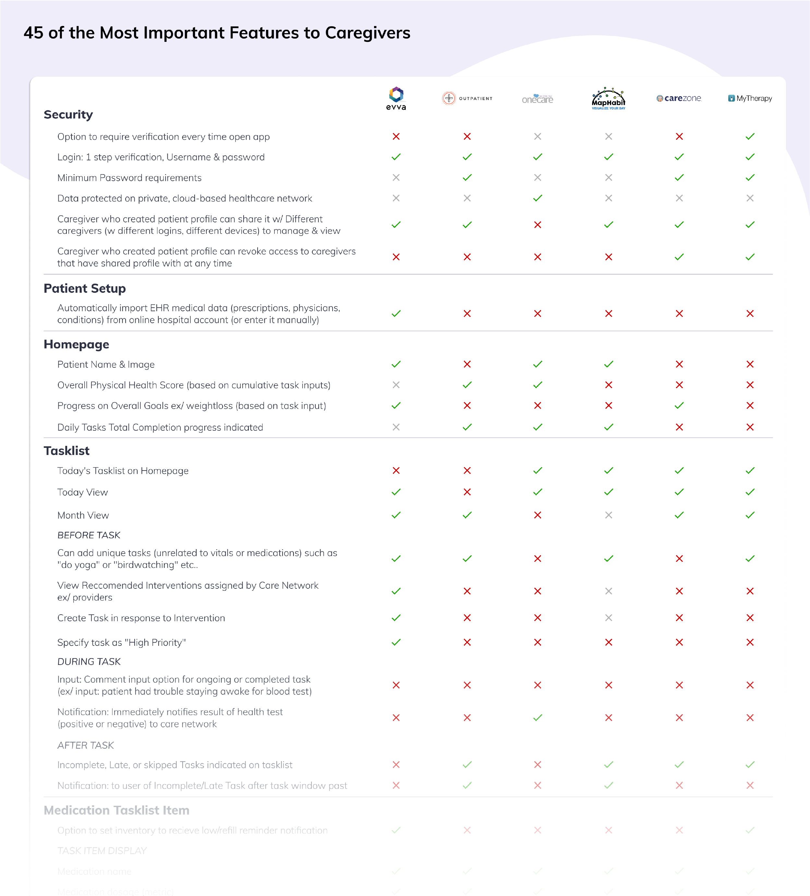
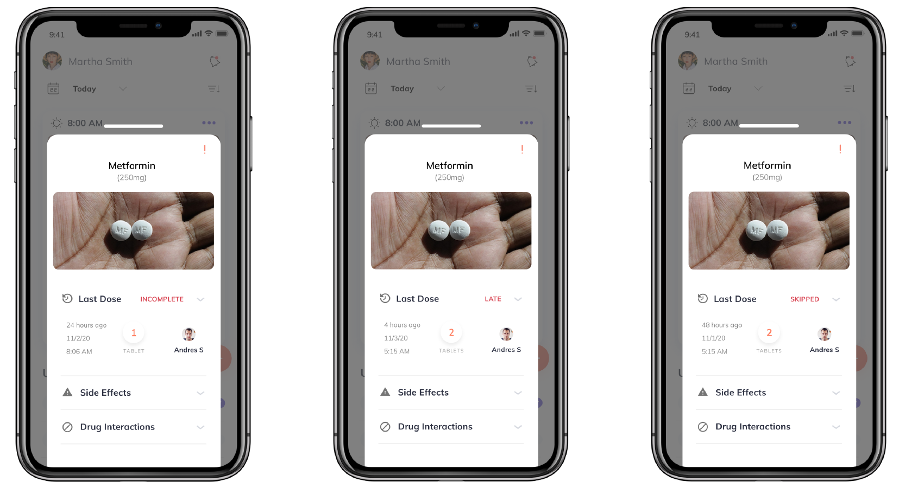
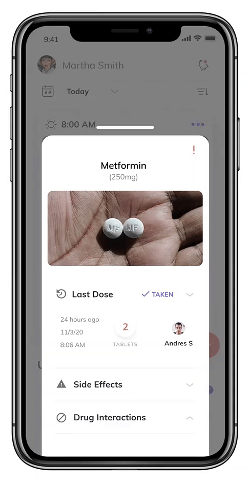

The following details research & design from a UX internship with Evva Health, a start-up offering caregiver & healthcare provider support through a mobile app.
My research was used to determine which product features to offer based on their importance to users.
An initial scoping session illuminated the concern:
What do providers expect from caregiving support apps?
By modifying this into two questions, I applied Comparative Analysis and User Research to answer them respectively.
What features do our competitors offer?
+
Which features are most important to caregivers?
By reviewing caregiver support blogs, app store reviews, and healthcare industy websites I identified 17 applications marketed towards caregivers, providers, and/or patients monitoring their health symptoms and medications.
I categorized by competitor type (Direct, Indirect Partial, Parallel, or Analogous) and narrowed down to four direct and one parallel competitor. The parallel competitor was included since it was to be released in the same region and timeframe as Evva's app.
I identified over 200 features to conduct a comparative analysis regarding:
- Security
- Patient Setup
- Homepage Display
- Tasklist UI
- Medications
- Physical Assessment
- Mental Assessment
- Bluetooth Medical Devices
- Caregiver Support
- Care Network Messaging
- Health Reporting
- Patient Documents
- Emergency
- UI, Display, & Gestures
This analysis illuminated the features most consistently offered amongst competitors and expected by users, thereby answering the first question.
To answer the second question, I administered a preference survey to health care providers using Qualtrics.
Multiple choice questions collected data on respondents' work background including what environments and populations they served.
Max-Diff questions allowed respondents to rank each feature's importance to their professional use.
Comments allowed for additional feedback.
The most impactful outcome of my research was 45 features I identified as "most important" to users.
Of these features, I also highlighted those which we would offer exclusively.

And, how our competitors compared in their offering of these highly ranked features.

Below are prototypes for 2 of the 45 features I identified as most important through my research.
Prototypes were created using Figma and Adobe Illustrator.
Feature 1: Indicate Incomplete, Late, or Skipped status for Medications

Feature 2: List Side Effects & Drug Interaction Warnings for Medications
